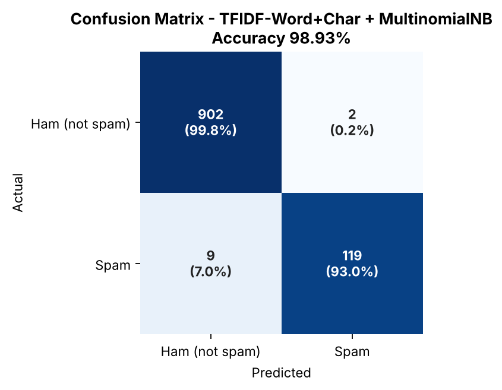
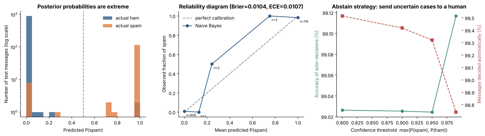

Engineering Intelligent Workflows with High-Fidelity Machine Learning
A unified intelligence suite comprising Multinomial Naive Bayes with uncertainty estimation, Perceptron vs. k-NN for graduation forecasts, K-Means Customer Segmentation, and Deep Neural Networks across 12 architectural configurations.
Enterprise Security & Leak-Free Validation
Engineered under strict experimental discipline to guarantee statistical significance, true generalization, and transparent decision boundaries.
Leak-Free Partitioning
Exact duplicates (403 SMS entries) were stripped before dataset splitting. Hyperparameter tuning was restricted entirely to training folds via stratified 5-fold CV, maintaining virgin test sets.
Sub-Millisecond Inference
Pre-trained weights serialize into production-ready pipelines. Dual deployment enables client-side instantaneous evaluation in the browser and asynchronous backend execution via Gradio.
Analytical Interpretability
Complete diagnostic reports including ROC-AUC curves, Brier score calibration, Perceptron standardized weight ranking, Silhouette clustering evaluations, and 12-network deep learning hyperparameter matrices.
Modular Examination Architecture, Stacked
Scroll down to examine each core question's scientific methodology, benchmark outcomes, and visual artifacts.
Multinomial Naive Bayes with Uncertainty Estimation
Tuned through word and character n-gram TF-IDF vectorization. We evaluated the risk of overconfident posteriors via Brier score and expected calibration error (ECE). False positives were suppressed to only 2 cases out of 904 legitimate test messages (98.35% precision).
Student Graduation Forecast: Linear vs. Non-Parametric
Comparative benchmark on 1,000 student records using 3 features (Study Hours, Attendance, Assignments Completed). While default Perceptron oscillated due to non-separable data (82.0%), the Averaged Perceptron stabilized at 94.00% accuracy (94.37% nested CV), outperforming tuned k-NN (91.50%).
Customer Behavioral Clustering & Actionable Tiers
Standardized features resolved the 4-order-of-magnitude scale disparity between Age (18-64) and Spending (100k-1.5M IDR). Rigorous evaluation across k=2..7 identified k=3 as optimal with peak silhouette score (0.672) and lowest Davies-Bouldin index (0.428).
Weather Condition Classification Across 12 Architectures
Comparative architecture exploration across depth (1, 2, 3 hidden layers) and width (32, 64, 128, 256 neurons). Engineered features (temperature amplitude and sinusoidal wind orientation) paired with Adam optimization and early stopping achieved an impressive 99.80% test accuracy.
Interactive Examination Suite
Test any model in real-time. All mathematical equations, scalers, and decision bounds run instantly in your browser.
Question 1: Spam Classifier (Multinomial Naive Bayes)
Classifies messages as legitimate (HAM) or fraudulent (SPAM) based on TF-IDF word and character n-grams.
Official Confusion Matrix & Calibration Curve


Want to run the full Python Gradio App locally?
All models are pre-trained and serialized in the repository. You do not need to retrain. Run the following in your terminal to launch the unified Gradio interface: